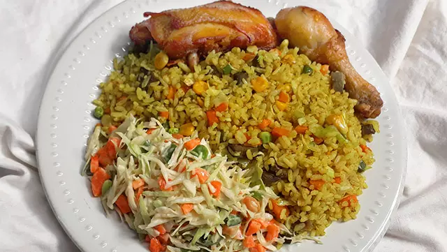

All recipes
Home

Nigeria fried rice
Fried rice is one of the most widely eaten Nigerian food; almost every Nigerian accepts it both at home and in Diaspora. I will show you how I make it.
Indredients
- 4 cups of rice.
- 5 cups of sliced Cabbage.
- 2 cups of sliced Carrot.
- 2 cups of sliced Green beans.
- Half cup of peas.
- 1 cup of sliced Green pepper.
- Cow Liver {300g}.
- 2kg of Chicken.
- Vegetable oil.{200ml}
- 1 cup of sliced Onions.
- Curry powder (coloring spice) {2 Tablespoons}.
- Salt and pepper to taste
Preparation
- Parboil chicken and liver (both together) with all the spices (a teaspoon of salt, half cup of sliced onions, a teaspoon of thyme spice, a teaspoon of curry, two seasoning cubes teaspoon each of powdered ginger and garlic).
Allow the meat to cook for ten to fifteen minutes, taste for salt, then pick out and deep-fry. Be sure to reserve the stock (meat water)
- Chop the cabbage, green beans, carrot, liver and set aside in a wide tray as you can find in the video below or the image above.
This process is easy, I normally use just a knife and chopping board or a tray.
- Parboil the 4 cups of rice also and cook with half of the meat stock (water from the meat) and two cups of water, cook until it is about 70% done.
Observe the rice closely. It doesn’t need to be too soft or too hard, just almost done.
Steps
- Set your cooking pot on heat, allow drying, then pour in about 200ml of vegetable oil.
Note: It is better to continue with the same oil you used while frying the meat (that is only if you fried the meats), you can reduce it to 200ml.
- Allow heating, then add the sliced onions, stir for 1-2 minutes.
- Then add the chopped carrot and green beans, any of these two can actually go first.
Add the chopped liver and sweet corn, stir.
Meat stock (water from the meat) should follow, add ground pepper (optional), add a teaspoon of salt and, add 1
seasoning cube then stir and taste, you may add more salt.
Add the green peas.
Cook fried rice
- Stir for 1-2 minutes then add cabbage and the
curry powder (Curry is a yellowish spice that actually adds the yellowish color to fried rice, add and stir till you are satisfied with the color.)
You would have a yellowish mixture that would often taste overly spiced, don’t worry the rice would balance the taste.
If you are satisfied with the taste, then add the green pepper, stir.
- Add the almost-done white rice and stir
turning rice fried
Stir all together, cover your pot and allow to simmer for 5-7 minutes.
That is how to make fried rice.
pot of fried rice
- Serve with the fried or fried meat (chicken), I fried my chicken as you can see above.
You can also grill the chicken.
I think grilled chicken is way better than fried chicken, for one, you will avoid the oil and accompanying cholesterol

Egg source
This one is going to be easy. If you are new to making Nigerian foods and desires to start with the recipes that are easy, I would suggest you start here. This takes just about six different ingredients and the preparation time is less than 20 minutes.
Ingredients
- 3 eggs
- 2 spoons sliced pepper
- Vegetable oil (200ml).
- 2 cups of sliced fresh tomatoes.
- Sliced pepper to taste.
- 1 cup of sliced onions.
- One cube of maggi or knorr.
- Salt to taste.
Steps
- Start by Slicing your tomatoes, onions, and peppers using a kitchen knife.
- Set frying pan on the heat and add just 200ml of oil (vegetable or olive oil), allow the oil to heat up for few minutes.
- Add the sliced tomatoes, peppers, onions and fry.
- Add salt to taste, half of a seasoning cube. Stir to avoid burning.
- Beat eggs in a separate bowl, add a pinch of salt and pour it into the frying tomatoes.
- Allow the egg to fry.
- Don't let it get burned. Try breaking into tiny crumbs so you can get an exact replica of what you see here.
- Serve egg sauce with boiled white yams.